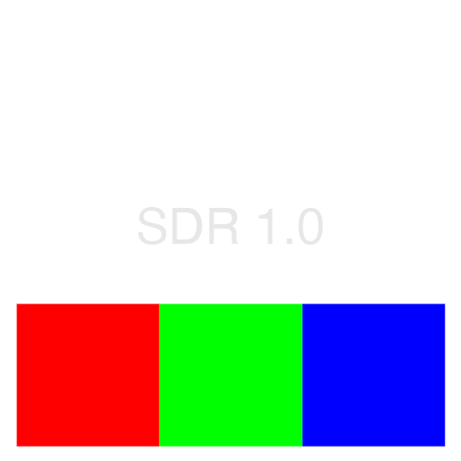

This page is designed to help you diagnose if your browser and display are displaying HDR values properly.
The image on the left marked "SDR 1.0" is an sRGB encoded png file.
The image on the right marked "PQ 100nits" is a Rec.2100 (Rec2020, ST.2084/PQ) encoded Avif file
Ideally, the two images should look the same. If you're seeing a log like desaturated image on the right under Windows, you may need to set "Use HDR" to On under the Display settings. If the white level of the left and right sections do not match, you may need to adjust the "HDR/SDR brightness balance" under Windows HD Color settings. In my limited experince it needs to be set to 5.

Swipe between the two states here. The outer section of colour boxes should match, as should the SDR white.
This image ramps from 10 nits up to 1000nit in 10nit steps. The image is encoded in Rec.2100 (Rec2020, ST.2084/PQ)
This second image ramps from 100nits all the way up to the PQ limit of 10000nits. It can be useful to see where things are being clipped or tone mapped on different displays. As well as seeing how the brightness slider on an XDR display scales things when in the "Pro Display XDR (1600nits)" variable brightness mode.